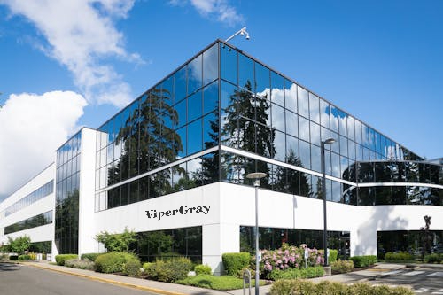

Sobre a Vipergray
A ViperGray foi fundada por três amigos gamers que sentiam a frustração de usar mouses sem fio que não entregavam a performance esperada. Com isso, decidiram criar o ViperGray X1, um mouse gamer sem fio que combinava precisão, ergonomia e uma bateria duradoura. Após meses de testes e ajustes, o produto foi lançado e rapidamente conquistou a comunidade gamer, se destacando pela sua incrível resposta e conforto. Hoje, a ViperGray continua inovando, oferecendo mouses que ajudam jogadores de todos os níveis a alcançar suas vitórias no mundo dos games.
